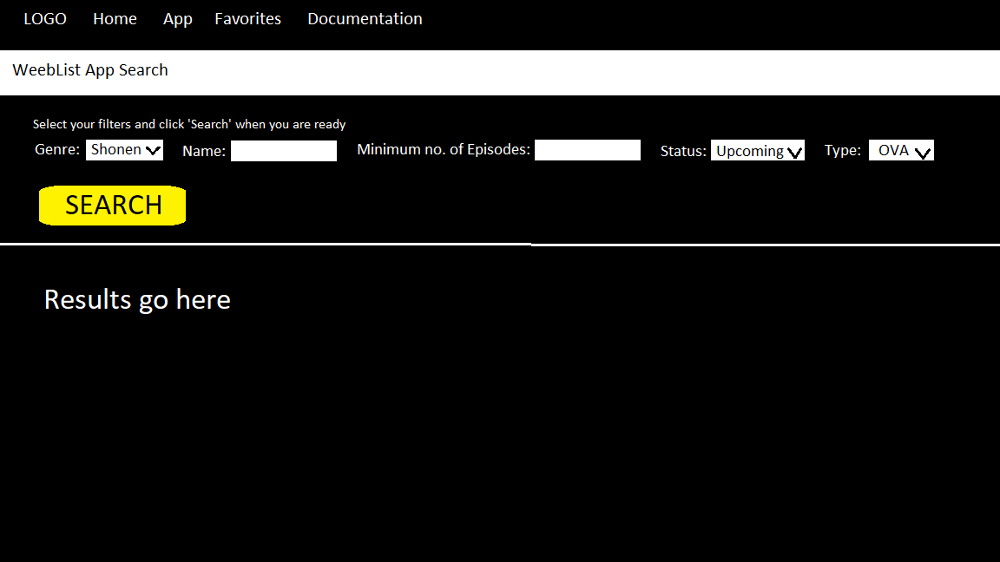

Proposal
- Link to the JikanJS Wrapper by Mateo Aranda Documentation
Major Features -
- Anime Search - Allows users to search for animes by filtering the results on the basis of number of results, name and genre.
- Add to List - Allows the user to build a temporary list of anime names by adding searched animes to this list.
- Save Favorites - Allows the user to save their favorite list of animes and share it with the Community. Anime Likes can be found in the Community page
Interface Mockup
Project Requirements
- Link to the Project Requirements
Resources Utilized
- https://bulma.io/documentation/elements/button/
- https://bulma.io/documentation/helpers/visibility-helpers/
- https://bulma.io/documentation/elements/button/#responsive-sizes
- https://bulma.io/documentation/helpers/typography-helpers/
- https://bulma.io/documentation/helpers/color-helpers/
- https://bulma.io/documentation/helpers/spacing-helpers/
- Font used - 'Merienda One' - https://fonts.google.com/specimen/Merienda+One?query=merienda
API
- Link to the Jikan API Documentation
- Link to Jikan Home
Noteworthy
- Fetch was used to get Json Data
- Bulma is used to make the site mobile friendly
- 4 Web Components are used to follow DRY code principles
- Uses local storage to save UI state
- Stores favorites in local storage
- Uses Firebase to store and retrieve data on how many likes an anime has recieved, i.e, how many times it was favorited and shared
Grading
- Ajax via fetch() is on the App page
- App page has required number of controls
- UI state is saved and restored on the App page, except for the genre field
- Cards have a favorite button and a remove from favorites button
- The Favorite system works and has been tested on banjo and a local server
- Firebase functionality is used to store likes data of animes
- There is an embedded font
- All Pages pass HTML and CSS validation
- Global Navigation system with cues is present
- Widgets are well labeled and follow interface conventions
- All images were properly optimized
- Code runs without any errors
To Do
- Add more controls to the App search
- Add sorting functionality on the Community page
- Add functionality for the user to create multiple anime lists and name them